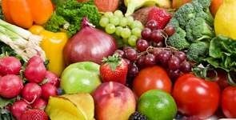
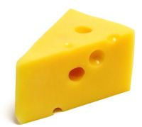

The Food Pyramid is designed to make healthy eating easier. Healthy eating is about getting the correct amount of nutrients - protein, fat, carbohydrates, vitamins and minerals you need to maintain good health.
Food that contain the same type of nutrients are grouped together on each of the shelves of the Food Pyramid. This gives you a choice of different foods from which to choose a healthy diet. Following the Food Pyramid as a guide will help you get the right balance of nutritious foods within your calorie range. Studies show that we take in too many calories from foods and drinks high in fat, sugar and salt, on the top shelf of the Food Pyramid. They provide very little of the essential vitamins and minerals your body needs. Limiting these is essential for healthy eating.
If you eat a varied and balanced diet, then there is normally no need to take any food supplements - you'll get everything you need from your food. The one exception to this is folic acid. All women of child-bearing age who could become pregnant should take supplements of 400micrograms folic acid each day. If a woman does become pregnant, she should continue to take the supplement during the first twelve weeks of pregnancy.
<